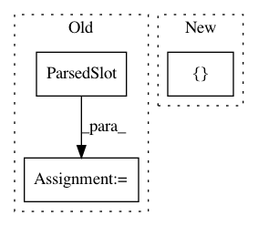

25cdc4fb25f23b0c6f407c018e0bc4ec368cebf7,snips_nlu/tests/test_result.py,TestResult,test_should_serialize_results,#TestResult#,13
Before Change
result = Result(text="hello world",
parsed_intent=IntentClassificationResult("world", 0.5),
parsed_slots=[
ParsedSlot((3, 5), "slot_value", "slot_entity",
"slot_name")])
// When
result_dict = result.as_dict()
// Then
try:
json.dumps(result_dict)
After Change
expected_result = {
RES_INTENT: {RES_INTENT_NAME: "world", RES_PROBABILITY: 0.5},
RES_SLOTS: [{RES_MATCH_RANGE: [3, 5],
RES_ENTITY: "slot_entity",
RES_SLOT_NAME: "slot_name",
RES_VALUE: "slot_value"}],
In pattern: SUPERPATTERN
Frequency: 3
Non-data size: 3
Instances
Project Name: snipsco/snips-nlu
Commit Name: 25cdc4fb25f23b0c6f407c018e0bc4ec368cebf7
Time: 2018-01-18
Author: adrien.ball@snips.net
File Name: snips_nlu/tests/test_result.py
Class Name: TestResult
Method Name: test_should_serialize_results
Project Name: snipsco/snips-nlu
Commit Name: f83dd115acb0d119fa466fad51b473a30749f684
Time: 2017-05-11
Author: clement.doumouro@snips.ai
File Name: snips_nlu/intent_parser/regex_intent_parser.py
Class Name: RegexIntentParser
Method Name: get_slots
Project Name: snipsco/snips-nlu
Commit Name: b4ea9436bf58a3ad8326e2b617416e045be8335b
Time: 2017-05-02
Author: adrien.ball@snips.net
File Name: snips_nlu/intent_parser/crf_intent_parser.py
Class Name: CRFIntentParser
Method Name: get_slots